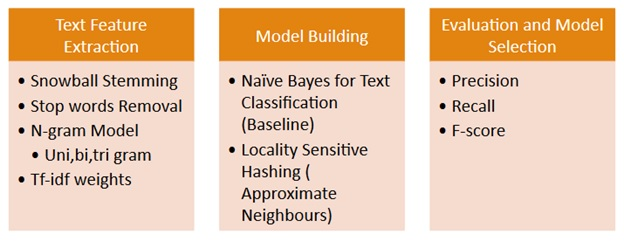
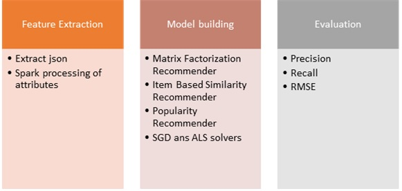
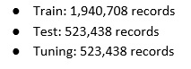
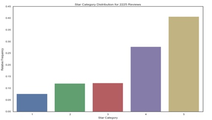
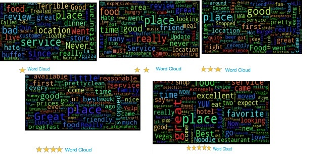
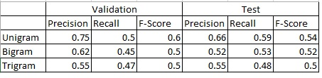
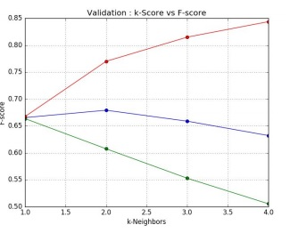
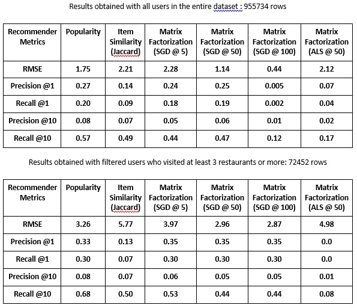

Our Motivation
Yelp is one of the leading multinational companies around the world. The Yelp dataset challenge had been one of the leading online competitions for data scientists to showcase their talents. The dataset is rich with customer, image and location based data. This opens the door to apply a wide variety of text mining and deep learning techniques. Hence working with this data and participating the biggest online challenge was in itself a huge challenge and motivation for us
We set two tasks for us to achieve to complete our project
Task 1
The first task was to predict the category of a restaurant based on the user reviews.
Task 2
The second task was to poredict where the user would go next. This was like a recommendation system which could recommend the user to a restaurant that he could go next
DATASET DESCRIPTION
This is how we split up our dataset 
The review star information
The word cloud for each star
Task1
Evaluation metrics results for Naive Bayes
Evaluation metrics results for Locality Sensitive Hashing
Task2
